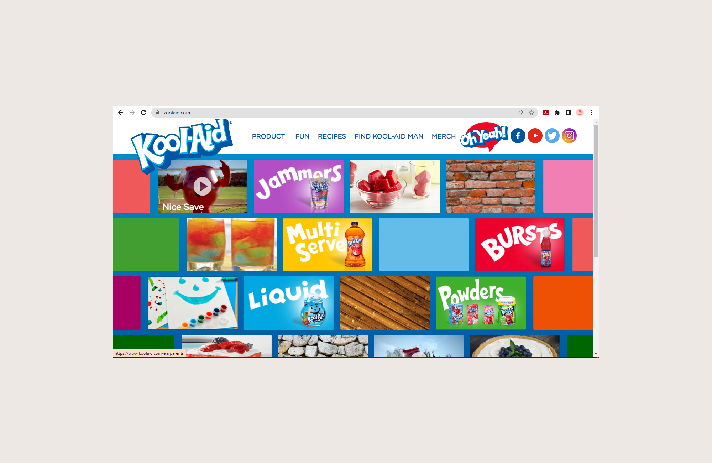

Graphic Design
The goal of designing a single page website that would utilize basic accesibility standards and updat the current appearance turned out to be an instant favorite. All apperances could be altered so I opted for a complete facelift and chose to rebrand the companies physical packaging, logo, and all visual material in addition to colmpleting this single page site.
After several rounds of exploration and prototyping, I landed somewhere that is both fun and visually accesible compared to the previous design of the kool-aid website.